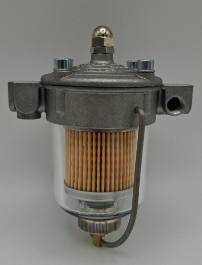
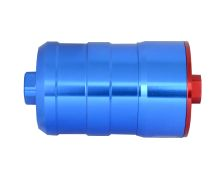

Kraftstoffsystem
Facet Red Top 480532 – Kraftstoffpumpe (2×)

| Angabe | Wert | Quelle |
|---|---|---|
| Hersteller | Motor Components LLC (Facet / Purolator), Elmira NY | Hersteller |
| Druck | 6–8 psi unreguliert | mehrere Händler |
| Fördermenge | bis 45 GPH (Zylinderbauform); bis 132,5 l/h bei 0,68 bar | Hersteller |
| Anschluss | 1/4" NPT, 12 V | Händler |
| Trocken-Ansaughöhe | ca. 0,6 m | Händlerangabe |
- Motor Components LLC – Hersteller · Kataloge und Datenblätter
- Pegasus Auto Racing – 480532 Produktseite
- Merlin Motorsport – Red Top
Konsequenz für dieses Fahrzeug: 6–8 psi sind rund das Doppelte bis Dreifache dessen, was der DRLA verträgt. Ein Druckregler ist Voraussetzung, nicht Zubehör. Die geringe Trocken-Ansaughöhe ist der Grund für die Montageregel „möglichst tanknah, vertikal, Auslass nach oben“. Details: Exkurs Kraftstoffdruck.
Malpassi Filter King – Druckregler mit Filter (2×)

| Angabe | Wert | Quelle |
|---|---|---|
| Hersteller | Officina Malpassi, Italien | Hersteller |
| Bauart | Bypass-Regler für Saugmotoren mit Vergaser – Rücklauf ist Funktionsprinzip | Hersteller |
| Ausführungen | 67 mm und 85 mm, Glas- oder Alubecher, mit und ohne Manometer | Hersteller |
| Verbaute Variante | noch aufzunehmen | offen |
Sytec Bullet – Inline-Filter (vermutlich die blauen Zylinder)

| Angabe | Wert | Quelle |
|---|---|---|
| Bauform | Billet-Aluminium, blau eloxiert, 110 mm × 50 mm | Händler |
| Durchfluss | bis 300 l/h | Händler |
| Element | 8 µm Papier serienmäßig – bis ca. 350 PS. Darüber 55 µm Metallelement, reinigbar | Händler |
| Identifikation am Fahrzeug | noch zu bestätigen | offen |
Zu prüfen beim Zerlegen: Die Leistungsgrenze des serienmäßigen 8-µm-Papierelements liegt laut Händlerangabe bei etwa 350 PS. Ein 302 mit vier DRLA 45 liegt darunter oder darüber – je nach Ausbaustufe. Welches Element verbaut ist, sollte beim ersten Öffnen festgehalten werden; ein zu feines Element auf der Druckseite zeigt sich als Druckabfall unter Last, nicht im Leerlauf.